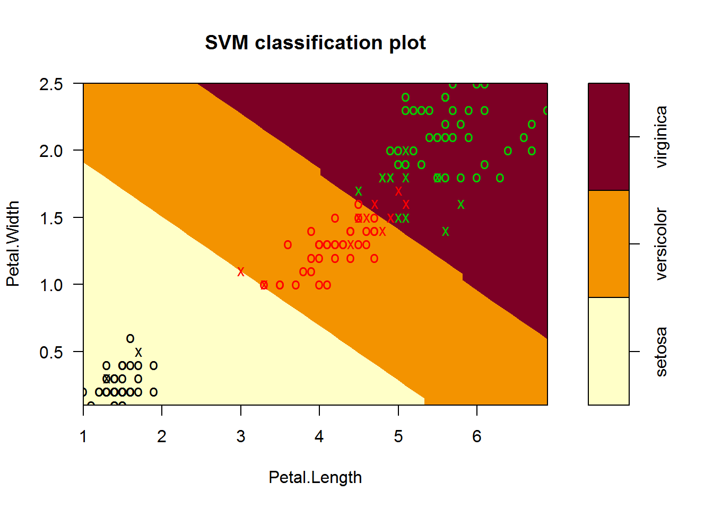
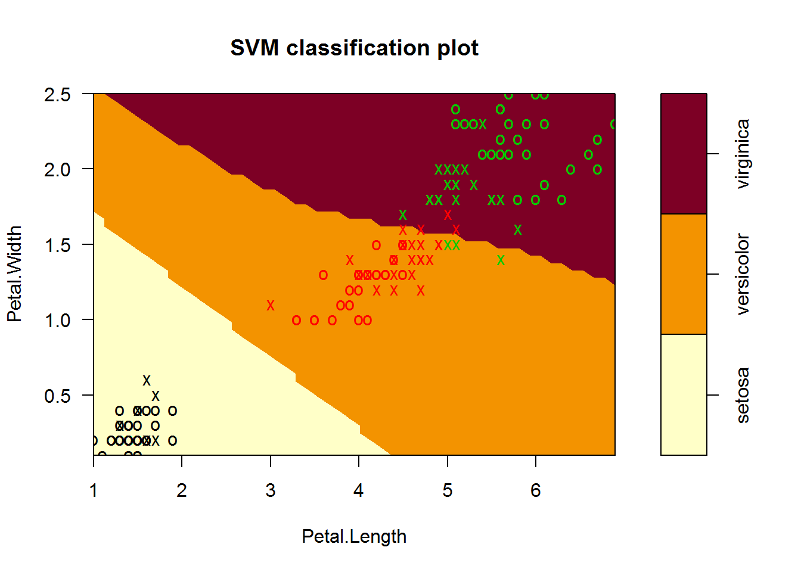
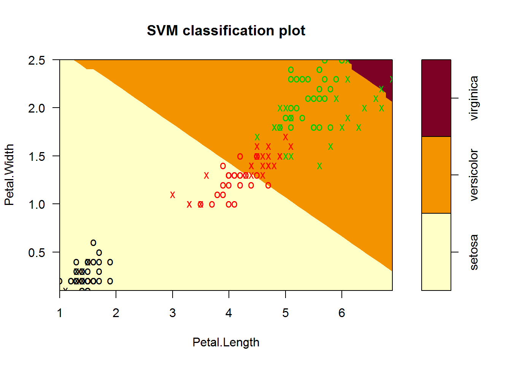

Last updated: 2020-01-31
Checks: 7 0
Knit directory: SVM-Comparison/
This reproducible R Markdown analysis was created with workflowr (version 1.6.0). The Checks tab describes the reproducibility checks that were applied when the results were created. The Past versions tab lists the development history.
Great! Since the R Markdown file has been committed to the Git repository, you know the exact version of the code that produced these results.
Great job! The global environment was empty. Objects defined in the global environment can affect the analysis in your R Markdown file in unknown ways. For reproduciblity it’s best to always run the code in an empty environment.
The command set.seed(20200131) was run prior to running the code in the R Markdown file. Setting a seed ensures that any results that rely on randomness, e.g. subsampling or permutations, are reproducible.
Great job! Recording the operating system, R version, and package versions is critical for reproducibility.
Nice! There were no cached chunks for this analysis, so you can be confident that you successfully produced the results during this run.
Great job! Using relative paths to the files within your workflowr project makes it easier to run your code on other machines.
Great! You are using Git for version control. Tracking code development and connecting the code version to the results is critical for reproducibility. The version displayed above was the version of the Git repository at the time these results were generated.
Note that you need to be careful to ensure that all relevant files for the analysis have been committed to Git prior to generating the results (you can use wflow_publish or wflow_git_commit). workflowr only checks the R Markdown file, but you know if there are other scripts or data files that it depends on. Below is the status of the Git repository when the results were generated:
Ignored files:
Ignored: .Rhistory
Note that any generated files, e.g. HTML, png, CSS, etc., are not included in this status report because it is ok for generated content to have uncommitted changes.
There are no past versions. Publish this analysis with wflow_publish() to start tracking its development.
This is about the general SVM used on iris dataset.
#1 A simple svm model
library(e1071)
data(iris)#x---feature variable, data except iris 5th column (Species)
x = iris[,-5]
#y---outcome variable, data in iris 5th column
y = iris[,5]
#build svm model
m = svm(x,y,kernel = "radial", gamma = if(is.vector(x)) 1 else 1/ncol(x))When deciding the gamma coefficient, if feature vector is a vector, gamma=1, otherwise gamma=1/number of feature vectors.
summary(m)
Call:
svm.default(x = x, y = y, kernel = "radial", gamma = if (is.vector(x)) 1 else 1/ncol(x))
Parameters:
SVM-Type: C-classification
SVM-Kernel: radial
cost: 1
Number of Support Vectors: 51
( 8 22 21 )
Number of Classes: 3
Levels:
setosa versicolor virginicaThis SVM model is C-classification. Gamma in the Gauss kernel function is 0.25. The cost of constraint violation determined by this model is 1. Three categories: setosa (8 support vectors), versicolor (22 support vectors) and virginica (21 support vectors).
#conform the sample characteristic matrix used for prediction
x = iris[,1:4]
pred = predict(m,x)
table(pred,y) y
pred setosa versicolor virginica
setosa 50 0 0
versicolor 0 48 2
virginica 0 2 48#Tune to find the best gamma and cost
st = tune(svm, train.x=x, train.y=y, kernel="radial", ranges=list(cost=10^(-1:2), gamma=c(.5,1,2)))
print(st)
Parameter tuning of 'svm':
- sampling method: 10-fold cross validation
- best parameters:
cost gamma
1 0.5
- best performance: 0.04 newm <- svm(Species ~ ., data=iris, kernel="radial", cost=1, gamma=0.5)
summary(newm)
Call:
svm(formula = Species ~ ., data = iris, kernel = "radial", cost = 1,
gamma = 0.5)
Parameters:
SVM-Type: C-classification
SVM-Kernel: radial
cost: 1
Number of Support Vectors: 59
( 11 23 25 )
Number of Classes: 3
Levels:
setosa versicolor virginicapred <- predict(newm,x)
table(pred,y) y
pred setosa versicolor virginica
setosa 50 0 0
versicolor 0 48 2
virginica 0 2 48This model predicts all setosa flowers correctly; 48 of the versicolor flowers are correect while 2 of them are categorized into virginica; 48 of the virginica flowers are correect while 2 of them are categorized into versicolor.
=====================================================================================
#2 A more comprehensive svm model
#x---feature variable, data except iris 5th column (Species)
x = iris[,-5]
#y---outcome variable, data in iris 5th column
y = iris[,5]===================================================================================== We initialize the prediction matrix’s 3 dimensions as 150,3,4 and initialize the precision matrix’s 2 dimensions as 3,4.
We can change methods (C-classification, nu-classification) and kernels (linear, polynomial, radial, sigmoid).
C-classification + radial
#model1: weight for each category is the same (equal to the #1 model)
model1 = svm(x,y)
pred1 = predict(model1,x)
table(pred1,y) y
pred1 setosa versicolor virginica
setosa 50 0 0
versicolor 0 48 2
virginica 0 2 48Optimization
#model2: weight for versicolor and virginica * 200
weight = c(1,200,200)
names(weight) = c("setosa","versicolor","virginica")
model2 = svm(x,y,class.weights = weight)
pred2 = predict(model2,x)
table(pred2,y) y
pred2 setosa versicolor virginica
setosa 50 0 0
versicolor 0 49 0
virginica 0 1 50summary(model2)
Call:
svm.default(x = x, y = y, class.weights = weight)
Parameters:
SVM-Type: C-classification
SVM-Kernel: radial
cost: 1
Number of Support Vectors: 28
( 8 10 10 )
Number of Classes: 3
Levels:
setosa versicolor virginica#model3: weight for versicolor and virginica * 500
weight = c(1,500,500)
names(weight) = c("setosa","versicolor","virginica")
model3 = svm(x,y,class.weights = weight)
pred3 = predict(model3,x)
table(pred3,y) y
pred3 setosa versicolor virginica
setosa 50 0 0
versicolor 0 50 0
virginica 0 0 50For model3, all predictions are correct.
=====================================================================================
Now we change a kernel. C-classification + linear/polynomial/sigmoid
model4 = svm(Species~., data = iris, kernel = 'linear')
summary(model4)
Call:
svm(formula = Species ~ ., data = iris, kernel = "linear")
Parameters:
SVM-Type: C-classification
SVM-Kernel: linear
cost: 1
Number of Support Vectors: 29
( 2 15 12 )
Number of Classes: 3
Levels:
setosa versicolor virginicaplot(model4,
data = iris,
Petal.Width ~ Petal.Length,
slice = list(Sepal.Width = 3, Sepal.Length = 4))
# predict
pred4 = predict(model4, iris)
summary(pred4) setosa versicolor virginica
50 47 53 #confusion matrix
table(pred4,y) y
pred4 setosa versicolor virginica
setosa 50 0 0
versicolor 0 46 1
virginica 0 4 49model5 = svm(Species~., data = iris, kernel = 'polynomial')
summary(model5)
Call:
svm(formula = Species ~ ., data = iris, kernel = "polynomial")
Parameters:
SVM-Type: C-classification
SVM-Kernel: polynomial
cost: 1
degree: 3
coef.0: 0
Number of Support Vectors: 54
( 6 26 22 )
Number of Classes: 3
Levels:
setosa versicolor virginicaplot(model5,
data = iris,
Petal.Width ~ Petal.Length,
slice = list(Sepal.Width = 3, Sepal.Length = 4))
# predict
pred5 = predict(model5, iris)
#summary(model5)
#confusion matrix
table(pred5,y) y
pred5 setosa versicolor virginica
setosa 50 0 0
versicolor 0 50 7
virginica 0 0 43model6 = svm(Species~., data = iris, kernel = 'sigmoid')
summary(model6)
Call:
svm(formula = Species ~ ., data = iris, kernel = "sigmoid")
Parameters:
SVM-Type: C-classification
SVM-Kernel: sigmoid
cost: 1
coef.0: 0
Number of Support Vectors: 54
( 6 26 22 )
Number of Classes: 3
Levels:
setosa versicolor virginicaplot(model6,
data = iris,
Petal.Width ~ Petal.Length,
slice = list(Sepal.Width = 3, Sepal.Length = 4))
# predict
pred6 = predict(model6, iris)
#summary(model6)
#confusion matrix
table(pred6,y) y
pred6 setosa versicolor virginica
setosa 49 0 0
versicolor 1 41 7
virginica 0 9 43
sessionInfo()R version 3.6.2 (2019-12-12)
Platform: x86_64-w64-mingw32/x64 (64-bit)
Running under: Windows 7 x64 (build 7601) Service Pack 1
Matrix products: default
locale:
[1] LC_COLLATE=Chinese (Simplified)_People's Republic of China.936
[2] LC_CTYPE=Chinese (Simplified)_People's Republic of China.936
[3] LC_MONETARY=Chinese (Simplified)_People's Republic of China.936
[4] LC_NUMERIC=C
[5] LC_TIME=Chinese (Simplified)_People's Republic of China.936
attached base packages:
[1] stats graphics grDevices utils datasets methods base
other attached packages:
[1] e1071_1.7-2
loaded via a namespace (and not attached):
[1] workflowr_1.6.0 Rcpp_1.0.1 class_7.3-15 rprojroot_1.3-2
[5] digest_0.6.20 later_0.8.0 R6_2.4.0 backports_1.1.4
[9] git2r_0.26.1 magrittr_1.5 evaluate_0.14 stringi_1.4.3
[13] fs_1.3.1 promises_1.0.1 rmarkdown_2.0 tools_3.6.2
[17] stringr_1.4.0 glue_1.3.1 httpuv_1.5.1 xfun_0.8
[21] yaml_2.2.0 compiler_3.6.2 htmltools_0.3.6 knitr_1.23